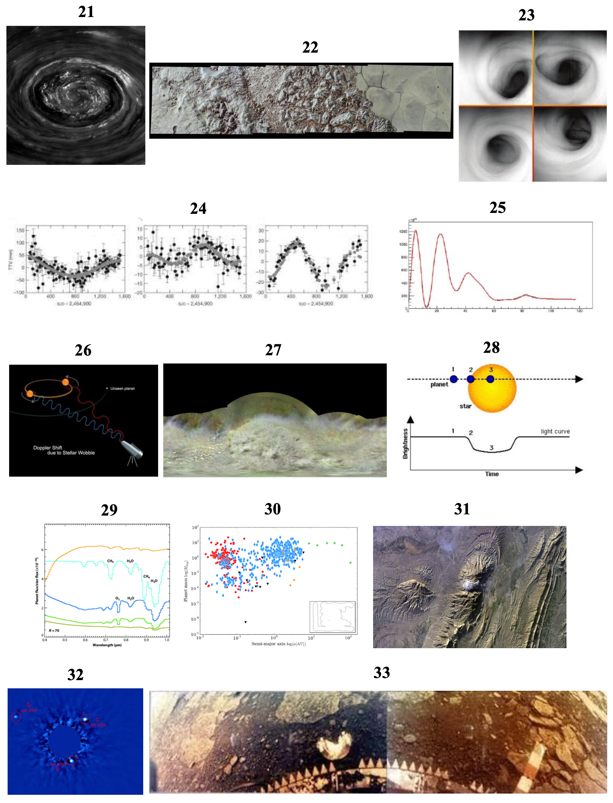
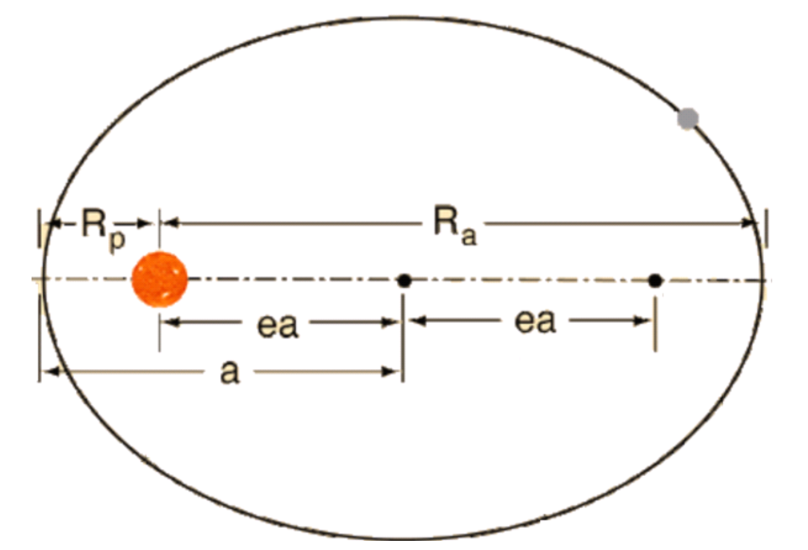
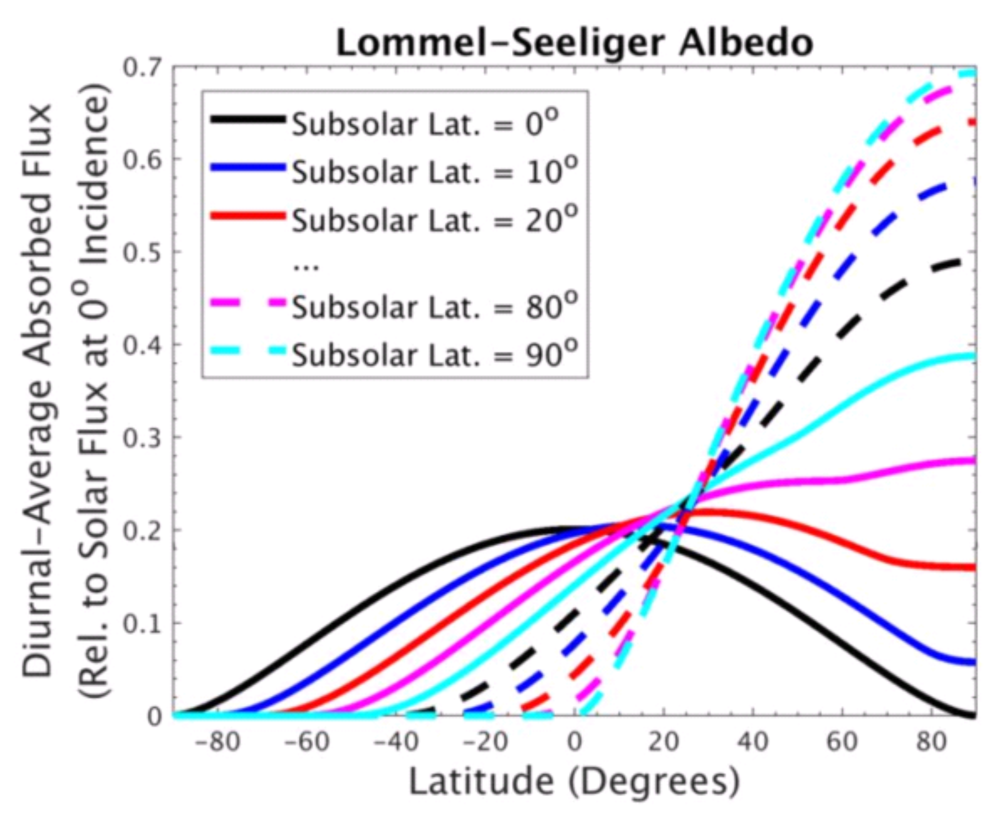
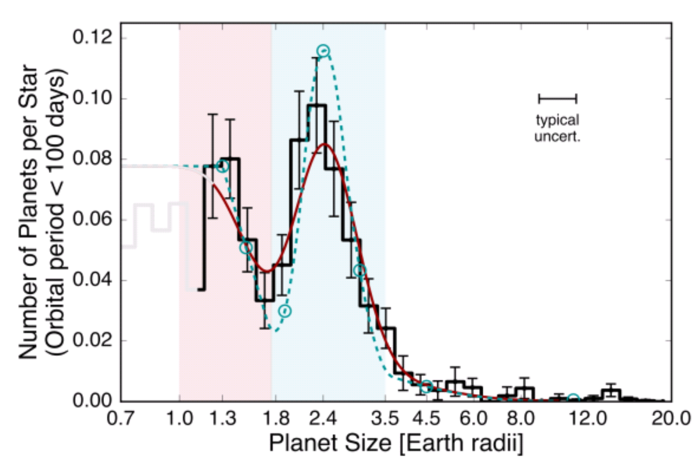

2022 Science Olympiad National Invitational Tournament
Division B - Complete Questions & Answers with Image Analysis
Study Mode Controls
Section A: True/False and Fill-in-the-Blank Questions
30 Questions - 1 Point Each - Total: 30 Points
1. The Sun is at the center of the Solar System.
A. True
B. False
Answer: A (True)
The Sun is indeed at the center of the Solar System, with all planets orbiting around it.
2. Pluto is a dwarf planet.
A. True
B. False
Answer: A (True)
Pluto was reclassified as a dwarf planet in 2006 by the International Astronomical Union.
3. Venus is the hottest planet in the Solar System.
A. True
B. False
Answer: A (True)
Venus is the hottest planet due to its extreme greenhouse effect, with surface temperatures around 460°C.
4. Saturn is the most massive gaseous planet in the Solar System.
A. True
B. False
Answer: B (False)
Jupiter is the most massive gaseous planet in the Solar System, not Saturn.
5. Io is in an orbital resonance with Iapetus.
A. True
B. False
Answer: B (False)
Io (moon of Jupiter) is not in orbital resonance with Iapetus (moon of Saturn). Io is in resonance with Europa and Ganymede.
6. The Cassini spacecraft visited Arrokoth in 2020.
A. True
B. False
Answer: B (False)
New Horizons visited Arrokoth in 2019, not Cassini in 2020. Cassini studied Saturn and its moons.
7. Ralph and Alice are instruments on the Galileo spacecraft.
A. True
B. False
Answer: B (False)
Ralph and Alice are instruments on the New Horizons spacecraft, not Galileo.
8. Pluto's largest moon is Charon.
A. True
B. False
Answer: A (True)
Charon is indeed Pluto's largest moon, discovered in 1978.
9. The planets in the HR 8799 system were discovered using the radial velocity technique.
A. True
B. False
Answer: B (False)
The HR 8799 planets were discovered using direct imaging, not radial velocity.
10. The Great Red Spot is on Jupiter.
A. True
B. False
Answer: A (True)
The Great Red Spot is a massive storm system on Jupiter that has been observed for centuries.
11. ALMA is a ground-based telescope located in Chile.
A. True
B. False
Answer: A (True)
ALMA (Atacama Large Millimeter Array) is indeed a ground-based radio telescope located in Chile's Atacama Desert.
12. Iapetus is a moon around Uranus.
A. True
B. False
Answer: B (False)
Iapetus is a moon of Saturn, not Uranus.
13. Uranus and Neptune are "ice giants".
A. True
B. False
Answer: A (True)
Uranus and Neptune are classified as ice giants due to their composition of water, methane, and ammonia ices.
14. The interior of Venus is thought to contain some amount of metallic hydrogen.
A. True
B. False
Answer: B (False)
Metallic hydrogen is found in gas giants like Jupiter and Saturn, not in terrestrial planets like Venus.
15. The barycenter (center of mass) of the Pluto-Charon system lies outside of either object.
A. True
B. False
Answer: A (True)
The Pluto-Charon barycenter lies in space between the two objects, making them essentially a double planet system.
16. Venus's atmosphere consists primarily of sulfur dioxide.
A. True
B. False
Answer: B (False)
Venus's atmosphere consists primarily of carbon dioxide (96%), not sulfur dioxide.
17. Io is thought to have been captured from the Asteroid Belt.
A. True
B. False
Answer: B (False)
Io formed in place around Jupiter and was not captured from the Asteroid Belt.
18. TOI-561 is an old, metal-poor star.
A. True
B. False
Answer: A (True)
TOI-561 is indeed an old, metal-poor star belonging to the galactic thick disk population.
19. Triton has a retrograde orbit.
A. True
B. False
Answer: A (True)
Triton orbits Neptune in a retrograde direction, suggesting it was a captured Kuiper Belt object.
20. Kepler-138d is a rocky super-Earth.
A. True
B. False
Answer: B (False)
Kepler-138d is believed to be a water world, not a rocky super-Earth.
📝 Fill-in-the-Blank Instructions
Complete the following statements with the name of an object or mission explicitly listed on the rules.
No object or mission will be used more than once. Use the exact spelling shown in the word bank.
Word Bank: Solar System Objects: Venus, Jupiter, Saturn, Uranus, Neptune, Io, Iapetus, Triton, Pluto, Arrokoth Extrasolar Systems/Planets: HL Tauri, HR 8799, Kepler 138, K2-18b, K2-33b, TOI-561 Missions: Magellan, Galileo, Juno, Cassini, Voyager 2, New Horizons, ALMA, Kepler, TESS
21. The _______ system has an innermost planet that completes an orbit in less than one Earth day.
Answer: TOI-561
The TOI-561 system has an innermost planet with an extremely short orbital period of less than one Earth day.
22. The moon _______, despite its high orbital inclination, was almost definitely not captured by the planet it orbits.
Answer: Iapetus
Iapetus, despite its unusual orbital characteristics, is believed to have formed in place around Saturn rather than being captured.
23. The Galilean moons are the four largest moons of the planet _______.
Answer: Jupiter
The Galilean moons (Io, Europa, Ganymede, and Callisto) are the four largest moons of Jupiter, discovered by Galileo Galilei.
24. The pre-main-sequence star _______ has greatly changed our understanding of how early planets may form in a star system.
Answer: HL Tauri
HL Tauri is a young T Tauri star with a protoplanetary disk that has provided crucial insights into early planetary formation processes.
25. The Solar System mission _______ included fly-by's of Jupiter, Pluto, and 486958 Arrokoth.
Answer: New Horizons
New Horizons conducted flybys of Jupiter (2007), Pluto (2015), and Arrokoth (2019) during its extended mission.
26. The planet _______ was the first Earth-sized exoplanet in its star's habitable zone to have its atmosphere detected.
Answer: K2-18b
K2-18b was the first Earth-sized exoplanet in the habitable zone to have water vapor detected in its atmosphere.
27. _______ is unique among the ice giants in our Solar System for radiating almost no excess heat relative to what it receives from the Sun.
Answer: Uranus
Unlike Neptune, Uranus radiates very little excess heat compared to what it receives from the Sun, making it unique among the ice giants.
28. The _______ mission succeeded Kepler in searching for exoplanets via the transit method.
Answer: TESS
TESS (Transiting Exoplanet Survey Satellite) is the successor to the Kepler mission for finding exoplanets using the transit method.
29. Though other missions have followed, the _______ mission is the most recent American spacecraft to explore the planet Venus, not counting fly-by's.
Answer: Magellan
Magellan was the last dedicated American mission to Venus, mapping the planet's surface using radar from 1990-1994.
30. Due to its surface activity, the moon _______ has a thin atmosphere consisting almost exclusively of sulfur and sulfur compounds.
Answer: Io
Io's volcanic activity creates a thin atmosphere composed primarily of sulfur dioxide and other sulfur compounds.
Section B: Image-Based Questions
21 Questions - Variable Points - Total: 70 Points
📸 SECTION B IMAGE SET Use the attached Image Set for the questions in this section. Each part within each question is worth 1 point unless otherwise specified.
Images 1-20: Various Solar System Objects and Spacecraft

Images 21-33: Additional Solar System Objects and Analysis
Image Viewer
Click on an image reference button to view images here.
31. (2 points) Order the objects shown in the following images by their distance from the Sun, from closest to farthest: 1, 2, 5, 10, 12
📸 Referenced Images:
Answer: 10, 2, 5, 12, 1
The objects are ordered by their distance from the Sun, with the closest object first.
32. (2 points) Order the objects shown in the following images by their average density, from least dense to most dense: 2, 6, 8, 17
📸 Referenced Images:
Answer: 17, 2, 8, 6
The objects are ordered by density, from least dense to most dense.
33. (3 points)
(a) What spacecraft provided the image of Saturn shown in Image 17? [1 pt]
(b) Where is this spacecraft currently located? [1 pt]
(c) What is the number of the image that shows the message carried by this spacecraft? [1 pt]
📸 Referenced Images:
Answers:
(a) Voyager 2
(b) Interstellar space
(c) Image 14
Voyager 2 took images of Saturn and is now in interstellar space, carrying the Golden Record message.
34. (2 points)
(a) What is the name of the object illustrated in Image 20? [1 pt]
(b) What is notable about the composition of this object's atmosphere? [1 pt]
📸 Referenced Images:
Answers:
(a) K2-18b
(b) The atmosphere has water within the habitable zone of its parent star
K2-18b is significant for having water vapor detected in its atmosphere while being in the habitable zone.
35. (4 points)
(a) Which image shows Venus as taken by Mariner 10 as it left the planet? [1 pt]
(b) Which series of spacecraft was the first to land on the surface of Venus? [1 pt]
(c) Which image shows a spacecraft on the Venusian surface? [1 pt]
(d) Why is the photo from part (c) iconic? [1 pt]
📸 Referenced Images:
Answers:
(a) Image 4
(b) Venera
(c) Image 33
(d) It was the first color image of Venus's surface
The Venera missions were pioneering Soviet missions that first successfully landed on Venus's harsh surface.
36. (4 points)
(a) What the name of the system shown in Image 7? [1 pt]
(b) The star in this system is categorized as belonging to a rare population of stars. What is it? [1 pt]
(c) How is the chemical composition of this group different from other groups of stars? [1 pt]
(d) What two telescopes combined observations to study this system in detail? [1 pt]
📸 Referenced Images:
Answers:
(a) TOI-561
(b) Galactic thick disk stars
(c) Lower metal content
(d) Keck and TESS
TOI-561 is an example of an old, metal-poor star system that provides insights into early planetary formation.
37. (7 points)
(a) Which object is shown in Image 12? [1 pt]
(b) Broadly speaking, what type of object is this? (There are multiple correct answers.) [1 pt]
(c) In what area of the Solar System is this object located? [1 pt]
(d) What causes the blue color shown in Image 12? [2 pt]
(e) Which object(s) in the rules is/are farther from the Sun (but still within the Solar System) than this object? Which image(s) show(s) them? [2 pt]
📸 Referenced Images:
Answers:
(a) Pluto
(b) Dwarf planet (also accept Kuiper Belt Object and Trans-Neptunian Object)
(c) Kuiper Belt
(d) Sunlight scattering off of haze particles in Pluto's atmosphere
(e) Arrokoth, Image 19
Pluto's blue atmospheric haze was one of the surprising discoveries from the New Horizons mission.
38. (4 points)
(a) Which image shows Jupiter's global circulation system? [1 pt]
(b) What mission is currently exploring this planet? [1 pt]
(c) Which image shows the processes taking place at the south pole of Jupiter? [1 pt]
(d) Which image shows X-ray emissions at the north pole of Jupiter? [1 pt]
📸 Referenced Images:
Answers:
(a) Image 15
(b) Juno
(c) Image 18
(d) Image 3
The Juno mission has provided unprecedented views of Jupiter's atmospheric dynamics and polar regions.
39. (2 points)
(a) A special phenomena involving Jupiter's magnetosphere occurs at its poles. What is the name of this phenomena? [1 pt]
(b) The Earth also displays these same phenomena. What is the major difference in these phenomena between Earth and Jupiter? [1 pt]
📸 Referenced Images:
Answers:
(a) Aurora
(b) On Jupiter, they are out of sync with each other
Jupiter's auroras behave differently from Earth's due to its unique magnetospheric structure.
40. (6 points)
(a) What is the name of the most volcanically active object in the Solar System? [1 pt]
(b) True or false: the volcanism on this object is icy. [1 pt]
(c) Which image shows this object? [1 pt]
(d) In one sentence or less, explain the root cause of this volcanism. [1 pt]
(e) What were the first spacecraft to image a volcanic eruption on this object? [1 pt]
(f) The image shown in part (a) above was taken by what mission? [1 pt]
📸 Referenced Images:
Answers:
(a) Io
(b) False
(c) Image 6
(d) Tidal forces from Jupiter and other Jovian moons
(e) Voyager 1
(f) Galileo
Io's sulfur volcanism is driven by tidal heating from Jupiter's immense gravitational field.
41. (6 points)
(a) One of the objects on the rules is a young T-Tauri star with a protoplanetary disk. What is its name? [1 pt]
(b) Which image shows this object? [1 pt]
(c) What telescope or spacecraft took this image? [1 pt]
(d) What is the image number that shows a distance density profile for the protoplanetary disk for this object? [1 pt]
(e) Which image shows another planetary system being discovered using direct imaging? [1 pt]
(f) What system is shown in the image from part (e)? [1 pt]
📸 Referenced Images:
Answers:
(a) HL Tauri
(b) Image 1
(c) ALMA
(d) Image 25
(e) Image 32
(f) HR 8799
HL Tauri and HR 8799 represent different stages of planetary system formation and evolution.
42. (7 points)
(a) One of the objects on the rules is a moon around Saturn. What is its name? [1 pt]
(b) Which image shows this object? [1 pt]
(c) What is notable about this object's orbit around Saturn? [1 pt]
(d) What is the most likely cause of the extreme difference in albedo between the leading and trailing hemispheres of this object? [2 pt]
(e) This object is also known for its distinctive equatorial ridge. There are several theories for the formation of this ridge; explain one of them. [2 pt]
📸 Referenced Images:
Answers:
(a) Iapetus
(b) Image 2
(c) Iapetus is locked in synchronous rotation
(d) Sublimation of volatiles
(e) Answers will vary, check Wikipedia
Iapetus is one of Saturn's most mysterious moons with its distinctive two-tone coloration and equatorial ridge.
43. (6 points)
(a) Image 22 shows the surface of what object? [1 pt]
(b) What is the name of the mission that took this image? [1 pt]
(c) Which instrument(s) was/were used to collect the data used to create this image? [1 pt]
(d) What is the name of the smooth area towards the right of the image? [1 pt]
(e) What is the name of the mountains shown in the middle of the image? [1 pt]
(f) Generally, what do scientists believe make up these mountains? [1 pt]
📸 Referenced Images:
Answers:
(a) Pluto
(b) New Horizons
(c) LORRI and MVIC
(d) Sputnik Planitia
(e) al-Idrisi mountains
(f) Water ice
New Horizons revealed Pluto's complex and geologically active surface features.
44. (7 points)
(a) There are three methods of detecting exoplanets explicitly listed in the rules for this event. Of these, which method has detected the most exoplanets? [1 pt]
(b) Which image depicts the exoplanet detection method from part (a)? [1 pt]
(c) Which method has detected the second highest number of exoplanets? [1 pt]
(d) Which image depicts the exoplanet detection method from part (c)? [1 pt]
(e) What makes the third method so difficult for detecting exoplanets? [2 pt]
(f) Image 30 shows a plot of planet mass vs. semi-major axis for exoplanets discovered using two methods. Which methods are represented by the colors red and blue, respectively? [1 pt]
📸 Referenced Images:
Answers:
(a) Transits
(b) Image 28
(c) Radial velocity
(d) Image 26
(e) The star is typically very bright compared to the planet
(f) Red: radial velocity, blue: transit
Different exoplanet detection methods have different strengths and limitations, leading to complementary discoveries.
45. (5 points)
(a) There is one object on the rules that is a moon of Neptune. What is its name? [1 pt]
(b) Which image shows this object? [1 pt]
(c) What is unique about the orbital motions of this moon? [1 pt]
(d) Which image shows a colored global map of this moon's surface? [1 pt]
(e) Image 31 shows white domes on Earth similar to those seen on the Neptunian moon, suggesting that this moon may be a watery world. What type of feature is shown? [1 pt]
📸 Referenced Images:
Answers:
(a) Triton
(b) Image 8
(c) Retrograde and/or poles face Sun
(d) Image 27
(e) Salt domes
Triton's retrograde orbit and geological features suggest it was a captured Kuiper Belt object.
46. (2 points)
(a) From where is the moon from the previous question thought to have originated? [1 pt]
(b) The moon from the previous question is most similar in formation, structure, and origin to which of the other objects listed in the rules? [1 pt]
📸 Referenced Images:
Answers:
(a) Kuiper Belt
(b) Pluto
Triton and Pluto share similar characteristics, supporting the captured Kuiper Belt object hypothesis.
47. (2 points)
(a) Which image shows Neptune? [1 pt]
(b) Which spacecraft visited Neptune and its moons? [1 pt]
📸 Referenced Images:
Answers:
(a) Image 5
(b) Voyager 2
Voyager 2 remains the only spacecraft to visit Neptune, providing our best close-up images of the ice giant.
48. (4 points)
(a) Which image shows Kepler-138? [1 pt]
(b) Broadly speaking, what type of exoplanet is the "b" component in this system? [1 pt]
(c) What exoplanet detection method was used to discover the planets in this system? [1 pt]
(d) Which image shows the radial velocity of the parent star in the system? [1 pt]
📸 Referenced Images:
Answers:
(a) Image 13
(b) Super Earth
(c) Transit
(d) Image 24
The Kepler-138 system demonstrates the power of combining multiple detection methods for exoplanet characterization.
49. (2 points)
(a) Image 29 shows the spectra of some planet and exoplanet atmospheres, with Earth's atmosphere represented by the green line. Which line represents the Kepler-138b? [1 pt]
(b) One of the spectra in Image 29 represents a planet in our Solar System. Which line is it, and which planet does it represent? [1 pt]
📸 Referenced Images:
Answers:
(a) Blue
(b) Orange, Venus
Spectroscopy allows us to compare atmospheric compositions across different worlds.
50. (3 points)
(a) Which object is shown in Image 11? [1 pt]
(b) Which spacecraft or telescope took this image? [1 pt]
(c) In which portion of the electromagnetic spectrum was this image taken? [1 pt]
📸 Referenced Images:
Answers:
(a) Uranus
(b) Hubble Space Telescope
(c) Near infrared
Hubble's infrared capabilities reveal details of Uranus's atmospheric structure and composition.
51. (7 points)
(a) Which image shows a map of the surface of Venus? [1 pt]
(b) Which spacecraft or telescope took the image from part (a)? [1 pt]
(c) Which image shows a complex impact on the surface of Venus taken by the mission from part (b)? [1 pt]
(d) Which image shows the southern polar region of Venus and was taken by the Venus Express spacecraft? [1 pt]
(e) Saturn has a similar feature near its poles. Which image shows this feature? [1 pt]
(f) Which spacecraft or telescope took the image from part (e)? [1 pt]
(g) In no more than a couple of words, what are these features? [1 pt]
📸 Referenced Images:
Answers:
(a) Image 10
(b) Magellan
(c) Image 16
(d) Image 23
(e) Image 21
(f) Cassini
(g) Hurricanes or storms
Both Venus and Saturn show polar vortex structures - massive storm systems at their poles.
📸 KEPLER'S LAWS DIAGRAM The figure below depicts a geometrically-exaggerated diagram of a planet (grey) in orbit around a star (orange). Let the planet, which orbits with period P, have a mass m, and the star have a mass M.

Orbital diagram showing semi-major axis (a), apoapsis (Ra), and periapsis (Rp)
📐 Mathematical Notation
In your answers to the following four questions, you may indicate subscripts using the "_" character (e.g., A_B would be AB) and superscripts using the "^" character (e.g., X^2 would be X2).
52. (6 points) In your own words, give a brief explanation of what a, Ra, and Rp represent in this diagram. Then, write a formula for a in terms of Ra, Rp, and any other necessary constants.
Answer:
Definitions: "a" indicates the semimajor axis of the system (1pt), Ra indicates the radius of apoapsis (or just apoapsis) (1pt), and Rp indicates the radius of periapsis (or just periapsis) (1pt)
Formula: a = (½) × (Ra + Rp) (3pts)
The semi-major axis is the average of the apoapsis and periapsis distances, representing the mean orbital radius.
53. (4 points) Write a formula that would allow you to determine a if you knew the values of P, m, and M without knowing Ra or Rp. Assume that each value is given in base SI units, not AU, years, or solar masses (i.e., be sure to include all necessary constants, like π).
Answer:
Formula: a = [(G×(M+m)×P²)/(4×π²)]^(1/3) (or algebraic equivalent) (4pts)
This is derived from Kepler's Third Law, relating orbital period to semi-major axis and the masses involved.
54. (3 points) By what factor would the value of a change if the period of the planet's orbit, P, was doubled, with all other values held constant?
Answer:
"a" would increase (1pt) by a factor of 2^(2/3) (2pts)
From Kepler's Third Law, if period doubles, the semi-major axis increases by the cube root of the square of the period change.
55. (7 points) By what factor would the value of P change if the mass of the planet were doubled with all else constant? What if the mass of the star were doubled with all else constant? Explain why these two values either differ or are the same, based on your answer.
Answer:
If the planet's mass is doubled then the change to P is by a factor of essentially zero (2pts). If the mass of the star is doubled then P will decrease (1pt) by a factor of 2^(1/2) (2pts). This difference is due to the fact that the mass of the planet is ultimately negligible within the equation, since it is taken in sum with the mass of the star, which is likely several orders of magnitude greater. (2pts)
The stellar mass dominates the gravitational dynamics, making planetary mass changes negligible for orbital period calculations.
🌊 Triton's Plumes
Currently, Io, Titan, Europa, Enceladus, and Triton are the only moons thought to be currently geologically active. Triton's plumes were discovered in 1989 when the Voyager 2 spacecraft visited it, but their origin is still an open question in the field. Currently, there are five theories for the source of these plumes, some with more plausibility than others:
Artistic depiction of three remaining, eruption-based hypotheses for Triton's plumes, taken from Hofgartner et al. (2019). Features are not shown to scale. The dark blue portion towards the bottom of the figure represents a subsurface water ocean (which Triton may have), but this isn't necessary in any of the three hypotheses.
56. (2 points) The "Buoyant Methane" and "Dust Devil" hypotheses for Triton's plumes are no longer considered likely candidates. Why is this the case?
Answer:
The winds in the atmospheric vortices are not strong enough to pick up dust (i.e., the dark material in plumes and fans) and to prevent shear of the vertical column, which was not observed.
These hypotheses were ruled out based on atmospheric dynamics and observational evidence from Voyager 2.
57. (6 points) Hansen et al. (1990) and Kirk et al. (1990) argued that the geographic distributions of plumes and fans on Triton was strong evidence of the plumes being solar-driven. For three decades, this was the leading hypothesis for the origin of Triton's plumes, as when Voyager 2 had observed Triton, the plumes were close to the subsolar latitude (i.e., the latitude where the sun appears directly overhead at that moment). Recently, however, Hofgartner et al. (2019) argue that this isn't necessarily the case.
The plot below shows how the daily-averaged solar flux varies with latitude for different subsolar latitudes. Using this plot and knowing that the two confirmed, active plumes on Triton were located at 49° S and 57° S, briefly explain why the plumes' locations aren't necessarily as supportive of the solar-driven hypothesis as previously thought.

Answer:
The maximum average daily solar insolation can actually be a significant distance from the subsolar latitude. The two plumes were located near the subsolar latitude when Voyager 2 observed them, but given their location, the maximum average daily solar insolation would actually take place close to the South Pole, and we didn't see plumes there.
This challenges the solar-driven hypothesis by showing that peak solar heating doesn't necessarily occur at the subsolar latitude.
58. (4 points) Hofgartner et al. suggest that it is possible to determine which of the three remaining theories is the origin of Triton's plumes through remote sensing.
Suppose that in the future, a spacecraft visits Triton. It finds the following:
• The distribution of active plumes is independent of seasons and the distribution of nitrogen ice
• The fans and plumes are water-rich
• The temperatures associated with plumes are above the boiling point of nitrogen on Triton

Based on this information, which of the three theories would you think is the origin of Triton's plumes?
Answer:
Cryovolcanism
The independence from seasonal variations, water-rich composition, and high temperatures all point to internal geological processes rather than surface-driven mechanisms.
📊 The Radius Gap
Our Solar System has small, rocky planets (e.g., Earth and Mercury) and large planets with thick, gaseous envelopes (e.g., Jupiter and Neptune), but nothing in between. Outside of our Solar System, however, we know that planets between the size of Earth and Neptune exist. What are these planets like, and how common are they?
Using the California-Kepler survey, Fulton et al. (2017) find that the radii of these types of planets has a bimodal distribution, leading to a "radius gap" (sometimes called a "radius valley").
59. (4 points) What is the difference between the atmospheres of the planets that comprise each of the peaks in the distribution?
In your answer, refer to the peaks as the "lower peak" (which has a red background) and "higher peak" (which has a light blue background) to prevent any misunderstandings while grading.
Answer:
Lower peak: rocky cores without significant gaseous atmosphere. Higher peak: rocky planets with some gaseous envelope, which significantly inflates the radius of the planet.
The radius gap reflects the difference between bare rocky cores and planets that retained substantial atmospheres.
60. (4 points) One possible cause of this bimodal distribution is photoevaporation. Briefly explain what photoevaporation is and how it could result in the planet characteristics you mentioned in the previous question.
Answer:
Light from the parent star (e.g., UV, x-ray) hits the atmosphere of a planet, heating up the molecules in it and causing some of them to "escape", slowly stripping the planet of its atmosphere. For some planets, it will strip away essentially all of the atmosphere, leaving behind a rocky core. For other planets, which have slightly stronger gravities, it won't, and the extra gaseous layer (which is not very dense) will lead to a significant increase in the radius of the planet.
Photoevaporation creates a natural division between planets that can retain atmospheres and those that cannot.
61. (6 points) Ginzburg et al. (2017) proposes an alternate mechanism for the radius gap based on the residual heat of the core of the young planet leading to atmospheric erosion (also known as "core-powered mass loss"). In order to determine which mechanism (photoevaporation or core-powered mass loss) contributes more, they suggested seeing how the radius gap varies with stellar type (i.e., seeing if having a hotter or cooler parent stars effects the radius gap). Theoretically, how would this help astronomers distinguish between the two?
Answer:
Photoevaporation, which is powered by the high-energy radiation, should see a strong dependence on stellar types, given that different types of stars give off different proportions of their energy in high-energy radiation. On the other hand, core-powered atmospheric erosion should be the same as long as the bolometric insolation (i.e. planets' equilibrium temperature) is held constant.
The stellar dependence would reveal whether external (photoevaporation) or internal (core-powered) processes dominate atmospheric loss.
🌍 Planetary Migration
Our Solar System's structure is also unique. All eight planets lie in roughly the same plane and move in the same direction as the spin of our Sun. Furthermore, the four rocky planets are close to the Sun, while the large, gaseous planets are all farther away. This "tidiness" led astronomers centuries ago to think that planets (and planetary systems) stayed roughly the same after the planets first formed.
Over the past few decades, astronomers have discovered systems that shatter these antiquated theories. Among these are systems that include large planets that orbit very, very close to their parent stars. K2-33b is such a planet.
62. (2 points) The radial velocity and transit detection methods are very effective for finding large planets that orbit close to their parent stars. Why is this the case?
Answer:
RV: larger radial velocities; Transit: higher transit probability and greater transit depth
Close-in planets produce stronger signals in both detection methods, making them easier to discover.
63. (4 points) Observationally, there are many spectroscopic indicators that K2-33 is a very young system, such as the infrared excess in K2-33's spectral energy distribution (SED). What causes this "infrared excess", and how would it be an indicator that the system is young?
Answer:
Light from the young protostar is absorbed by gas and dust in the envelope and disk around it. The light is then reemitted in the IR. The disk persists longer than the envelope. A system that is older would not have the envelope or disk and would not have the "bump" in the IR in the SED. Protostars with both an envelope and a disk will have larger "bumps" than those with only a disk.
Infrared excess indicates the presence of circumstellar material that disappears as systems age.
64. (6 points) Determining whether planets like K2-33b formed near their present position (in situ) or formed elsewhere and migrated to their present position is an open question. Conceptually speaking, planet migration mechanisms can be loosely classified into three categories:
• interactions with the protoplanetary disk
• interactions with a stellar companion and the planet
• interactions between multiple planets in the system
Due to its size, location, and age, what can K2-33b tell us about what is possible in terms of planetary migration? Between forming in-situ and the three migration mechanisms outlined earlier, which one(s) seem(s) plausible for K2-33b?
Answer:
K2-33b shows that it is *possible* for a large planet to be very close to its star at a very young age. Migration involving the protoplanetary disk occurs earlier/faster than migration involving a stellar companion or multiple planets. Based on this information, it probably formed in-situ or migrated inwards using a mechanism involving the protoplanetary disk. This does not mean that *all* planets like K2-33b went through this sort of formation.
The young age of K2-33b constrains the possible migration mechanisms to those that operate quickly.
65. (4 points) Studying exoplanets has yielded new insight into the formation and early evolution of our Solar System. The earliest investigators focused primarily on whether gravitational interactions within the Solar System could scatter or even eject objects, which would populate the Oort Cloud.
A planet ejecting an object results in the planet's orbit moving inwards slightly. From an energy conservation perspective, why is this the case? Of the eight planets in the Solar System, which would scatter or eject objects the most efficiently?
Answer:
The planet gives kinetic energy (which is positive) to the object getting ejected. The total energy in the system has to stay constant, so the planet's gravitational potential energy becomes more negative, corresponding with an orbit that is closer to the Sun. More massive planets will not have to move as far inwards when the scatter objects (for a given mass of the object being scattered), so Jupiter would be the planet most efficient for this process.
Energy conservation requires that when a planet ejects an object, the planet must lose orbital energy and move closer to the Sun.
66. (4 points) Planetary scientists have had difficulty explaining the formation of Neptune via the core accretion process at its current location. In 2005, a series of papers by Rodney Gomes, Hal Levison, Alessandro Morbidelli, and Kleomenis Tsiganis established the first version of the Nice model (named after the French city, where some of the original work was done). In what way(s) does the Nice model potentially address this issue?
Answer:
In the Nice model, Neptune formed much closer to the Sun, where the surface density of the disk was higher. This means that Neptune would have had enough time to form. Then, it migrated outwards to its present location. In some versions, Neptune and Uranus even switch places after forming (i.e., Neptune formed closer to the Sun than Uranus, but due to planetary migration, they switched places).
The Nice model solves Neptune's formation problem by invoking planetary migration from a more favorable formation location.
Study Tips
Focus on understanding the underlying physics and planetary science concepts rather than just memorizing facts.
Pay special attention to:
Planetary formation and evolution processes
Exoplanet detection methods and their capabilities
Atmospheric composition and evolution
Tidal forces and orbital dynamics
Spectroscopy and remote sensing techniques
Habitability criteria and astrobiology
Solar System exploration missions and discoveries
This study guide covers comprehensive Solar System science topics for advanced preparation. Good luck with your studies!